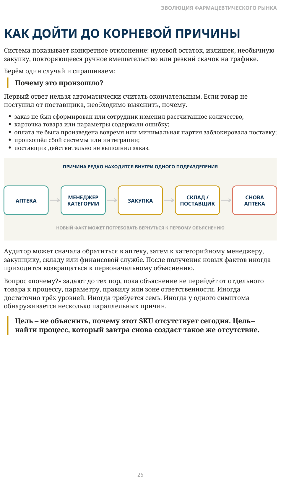

Аудит корневых причин запасов
ПОЧЕМУ ТОВАРА НЕТ — И ПОЧЕМУ ЕГО СЛИШКОМ МНОГО?
Аудит корневых причин запасов
Нулевой остаток и избыточный запас выглядят как противоположные проблемы. В первом случае компания теряет продажи и клиентов. Во втором — замораживает капитал и увеличивает риск списаний.
Но с точки зрения управления это явления одного типа.
Нулевой остаток — симптом. Избыточный запас — тоже симптом.
Можно устранить дефицит конкретного товара или сократить конкретный излишек. Но если процесс, создавший проблему, не изменился, отклонение появится снова — с тем же или с другим SKU.
Внутри компании уже сложились отношения между людьми и подразделениями. Поэтому вопросы о причинах могут восприниматься как попытка найти виновного или собрать материал против конкретного сотрудника.
Если человек чувствует угрозу, он перестаёт искать причину и начинает защищать свою позицию. Вместо фактов появляются безопасные объяснения: «поставщик не привёз», «аптека неправильно заказала», «система так рассчитала», «так исторически сложилось».
Мы ищем процесс, который создаёт проблему, а не человека, на которого можно её переложить.
КАК ДОЙТИ ДО КОРНЕВОЙ ПРИЧИНЫ
Система показывает конкретное отклонение: нулевой остаток, излишек, необычную закупку, повторяющееся ручное вмешательство или резкий скачок на графике.
Берём один случай и спрашиваем:
Почему это произошло?
Первый ответ нельзя автоматически считать окончательным. Если товар не поступил от поставщика, необходимо выяснить, почему. заказ не был сформирован или сотрудник изменил рассчитанное количество; карточка товара или параметры содержали ошибку; оплата не была произведена вовремя или минимальная партия заблокировала поставку; произошёл сбой системы или интеграции; поставщик действительно не выполнил заказ.
Аудитор может сначала обратиться в аптеку, затем к категорийному менеджеру, закупщику, складу или финансовой службе. После получения новых фактов иногда приходится возвращаться к первоначальному объяснению.
Вопрос «почему?» задают до тех пор, пока объяснение не перейдёт от отдельного товара к процессу, параметру, правилу или зоне ответственности. Иногда достаточно трёх уровней. Иногда требуется семь. Иногда у одного симптома обнаруживается несколько параллельных причин.
Цель — не объяснить, почему этот SKU отсутствует сегодня. Цель — найти процесс, который завтра снова создаст такое же отсутствие.

Описание схемы
FIG_011: КАК ДОЙТИ ДО КОРНЕВОЙ ПРИЧИНЫ
Замкнутый маршрут решения проходит через аптеку, категорийного менеджера, закупку, склад/поставщика и снова аптеку. Подпись указывает, что корневая причина часто находится внутри другого подразделения, поэтому локальный анализ недостаточен.
КТО ДОЛЖЕН ПРОВОДИТЬ АУДИТ?
Компания может провести аудит самостоятельно. Внутренняя команда хорошо знает людей, процессы и историю решений. Но у внутреннего взгляда есть два ограничения.
Первое — сложившиеся отношения. Сотрудникам бывает трудно ставить под сомнение решения коллег и руководителей. Второе — привыкание. Если компания долго живёт с проблемой, она постепенно начинает воспринимать её как норму: «этот поставщик всегда так работает», «в этих аптеках всегда больше запаса», «эта категория особенная».
Внешний аудит ценен не только независимостью. Специалисты, проводившие подобные проверки в разных компаниях, быстрее узнают повторяющиеся модели и продолжают задавать вопросы там, где внутренняя команда уже перестала видеть отклонение.
независимость
доступ к данным
опыт похожих аудитов
ответы без задержек
распознавание моделей
право спрашивать любого
настойчивость вопроса «почему?»
выполнение решений
Внешний специалист не заменяет руководство компании. Он помогает пройти диагностику независимо и не остановиться на привычном объяснении. Внутренний руководитель обеспечивает доступ, приоритет и последующее выполнение решений.
Независимый взгляд без внутреннего мандата не даст результата. Внутренний мандат без независимого метода может не дойти до причины.
БЕЗ ПОЛНОМОЧИЙ АУДИТ ОСТАНОВИТСЯ
Со стороны компании должен быть назначен руководитель аудита с реальным мандатом собственника или генерального директора.
Он должен иметь право: получать необходимые данные; обращаться напрямую к любому подразделению; задавать повторные вопросы и сопоставлять версии; требовать своевременного ответа; выносить системные причины на уровень руководства.
В одном из проектов собственник, не участвовавший в ежедневной операционной работе, лично стал внутренним руководителем аудита. Уже через несколько дней подразделения начали не просто отвечать на вопросы, а самостоятельно сопоставлять факты и искать причины.
В другой компании аудит поручили сотруднику без достаточных полномочий. Его запросы откладывали, перенаправляли или оставляли без ответа. Разница заключалась не в качестве метода, а в статусе задачи.
доступ к людям и данным
согласованное действие
темп проверки
конкретный срок
глубина поиска
выполнение решения
получение ответов
проверка результата
Во время аудита один руководитель отвечает за доступ, темп и глубину поиска. После аудита для каждого направления назначается один владелец изменения.
Это не поиск виновного. Ответственность появляется не за существование старой проблемы, а за выполнение согласованного изменения.
Участников может быть много. Ответственный должен быть один.
ТРИ ДНЯ, ЧТОБЫ УВИДЕТЬ ВСЮ КАРТУ
Первичная диагностика не должна превращаться в месячный проект. На первом этапе задача состоит не в том, чтобы точно рассчитать стоимость каждой причины, а в том, чтобы увидеть всю карту: какие причины существуют, где они возникают и что компании необходимо менять.
Если сразу считать каждое отклонение в деньгах, команда начинает обсуждать методику и точность данных ещё до того, как увидела саму систему проблем. Поэтому сначала строится карта причин. Точные расчёты выполняются позже — только для направлений, требующих инвестиций и управленческого решения.
нулевые остатки
повторяющиеся
приоритеты
излишки
причины
ответственные
аномальные графики
точки системы
следующие действия
По моей практике, при наличии доступа к системе и ключевым сотрудникам первоначальную карту в большинстве компаний можно построить за два-три рабочих дня. Проверку продолжают на новых SKU, пока новые случаи в основном не начинают попадать в уже найденные категории.
За три дня компания не устраняет все причины. За три дня она понимает, что именно необходимо устранять.
Трёхдневная диагностика завершается рабочей стратегической сессией. Руководство выбирает направления, которые компания реально способна изменить в следующие месяцы. Для каждого фиксируются корневая причина, необходимое изменение, один ответственный, первое действие, срок и дата проверки результата.
Здесь ответственность уже относится к следующему действию: кто выполнит изменение, к какому сроку и как будет проверен результат.
В одном из крупных проектов команда считала, что основные причины ей уже известны. После последовательного разбора нулевых и избыточных остатков получился список примерно на две страницы. Технический анализ превратился в тактико-стратегическую сессию и определил повестку изменений на следующие месяцы.
Результат аудита — не длинный отчёт. Это карта причин и согласованная программа изменений.
МЕХАНИЗМ НЕПРЕРЫВНОГО УЛУЧШЕНИЯ
После выполнения согласованных изменений компания не получает систему, в которой больше нет отклонений. Она переходит на другой качественный уровень.
Причины, которые раньше создавали основную часть нулевых и избыточных остатков, перестают доминировать. И только тогда становятся видны причины следующего уровня.
Часть из них существовала и раньше, но была скрыта за более крупными проблемами. Другие начинают проявляться только после того, как прежние ограничения устранены и процесс начинает работать иначе.
следующее
ограничение
становятся видны причины следующего
слоя
доминирующие причины
Это похоже на подъём от одной вершины к другой. Пока компания находится внизу, она видит ближайшую вершину. Поднявшись на неё, она открывает следующую, которую раньше невозможно было увидеть.
Поэтому повторный аудит нужен не только потому, что в компании меняются люди, поставщики или системы. Главная причина в другом: после каждого качественного улучшения становится виден следующий уровень ограничений.
Аудит → карта причин → устранение доминирующих причин → новый уровень работы → следующая карта причин.
Полную карту полезно пересматривать не реже одного раза в год. Но если основные изменения выполнены и результат стабилизирован раньше, не нужно ждать календарной даты. Следующий аудит можно проводить сразу.
Устранение корневых причин не завершает улучшение. Оно поднимает компанию выше и делает видимым следующий уровень причин.